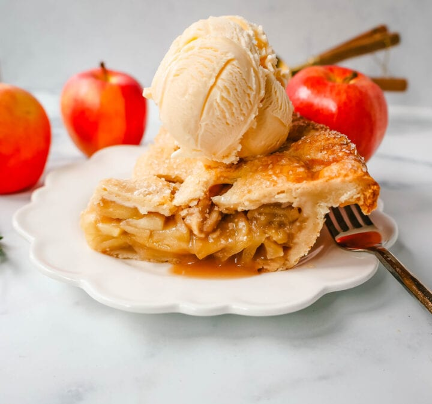

Apple Pie Recipe

It has just the right amount of sweetness and focuses on highlighting the natural sweetness of the apples. This is the best apple pie!
This Traditional Apple Pie Recipe is a classic dessert and a recipe everyone needs in their back pocket. I have made many apple pie recipes in my day and this is the perfect apple pie recipe.
Ingredients
Apple Pie Filling:
- 3 lbs. Apples * (about 10-11 apples, sliced)
- 1 cup Brown Sugar
- 1/3 cup Flour
- 1 teaspoon Cinnamon
- 1/4 teaspoon Salt
- 1 Tablespoon Butter (for the top of the filling before baking)
Homemade Pie Crust:
- 2 1/2 cups Flour
- 1 cup Cold Unsalted Butter (cut into cubes)
- 1 teaspoon Salt
- 1/2 cup Buttermilk (or ice cold water)
Topping:
- 1 large Egg (lightly beaten for wash)
- 2 to 3 Tablespoons Pearl, Sanding, or Granulated Sugar
Instructions
Apple Pie Filling:
- Peel and slice the apples into 1/4 - 1/2" inch thick slices. In a medium bowl, combine apple slices, brown sugar, flour, salt, and cinnamon, and stir to combine.
- Let the apple mixture sit at room temperature for 30 minutes so the apples release their natural juices which will allow more apples to fit into the pie shell.
Pie Crust:
- In a food processor or bowl, add flour, butter, salt, and buttermilk. Mix until the mixture begins to form into a ball. This will be easier in a food processor. If you don't have a food processor, you can mix this in a bowl. Once it is mostly mixed, use your clean hands to press the mixture together. If you need more liquid, add 1 teaspoon of ice water at a time.
- Preheat oven to 350 degrees. Roll out 1/2 of the pie crust dough into a large enough circle to fit into a 9-ince pie plate. Press into the pie plate, letting some of the pie dough overhang on the sides.
- Pile the apples and juices into the pie shell, pressing down so you remove any air pockets between the apples. Dot the cubed butter evenly over the apples.
- Roll out the remaining dough. Using a pastry brush, brush the dough with the lightly beaten egg wash. If you want to make patterns in the pie crust, fold the dough into fours and cut little shapes with your knife.
- Gently pick up the top crust dough and drape it over the apples, ensuring it covers all of the apples. Sprinkle sugar all over the top. Cut slits into the apple pie. Flute the edges into a ruffle pattern.
- Place the apple pie on a large baking sheet and bake until the top is a light golden brown color, about 1 hour 5 minutes to 1 hour 20 minutes.
- Remove the pie from the oven and let it cool for about 4 hours. This allows the apples and juices to solidify before cutting into the pie.
- Serve with vanilla bean ice cream.
Notes
Best Apples for Apple Pie:
- Granny Smith
- McIntosh
- Rome
- Gala
- Honeycrisp
- Jonagold
- Pink Lady
These are the best baking apples. You want an apple firm enough to withstand baking and won't turn to mush.
I prefer to use two types of apples in my homemade apple pie recipe. I like to use a firm apple such as Granny Smith paired with a sweeter type apple like Gala. It gives the apple pie a variety of textures and flavors.